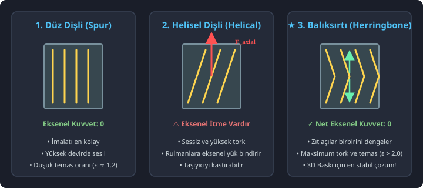
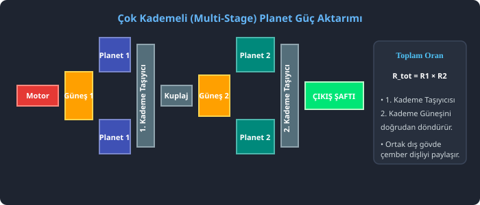
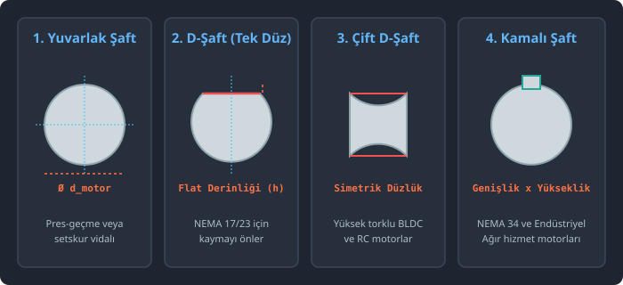
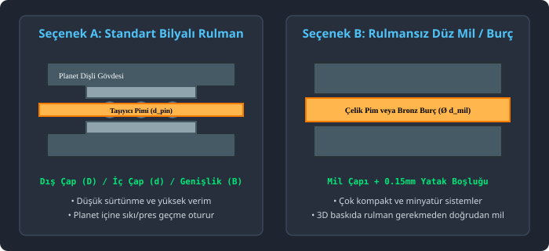

TEKNİK DETAYLAR
Entegre Mühendislik Şemaları
Program içinde yer alan interaktif görsel açıklamalar, kullanıcıyı her adımda doğru seçime yönlendirir.

Balıksırtı ve Düz Dişli Karşılaştırması
V-twist diş profilinin eksenel kuvvetleri nasıl dengelediği ve kendi kendini nasıl merkezlediği.

Eşit Açılı Montaj Kuralı
(Z_s + Z_r) % N = 0 denkleminin diş profillerinin aynı anda birbirine geçişindeki kritik rolü.

Çok Kademeli Taşıyıcı Akuple
1. kademe taşıyıcı kafesinden 2. kademe güneş dişlisine tork iletim yapısı ve yekpare gövde.

Motor Şaftı ve Bağlantı Tipleri
D-şaft, çift D-şaft, kamalı mil (DIN 6885) ve pres-geçme sıkı tolerans seçenekleri.

Rulman ve Segman Montajı
DIN 471 segman kanalları, fatura dayanma yüzeyleri ve bilyalı rulman yerleşimi.

Tolerans & Backlash Profilleri
FDM (0.22mm), SLA (0.12mm) ve CNC metal işleme (0.05mm) için otomatik diş inceltme.